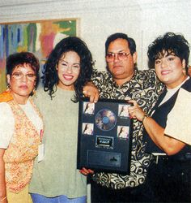

Gold Records
In 1987 at the Tejano Music Awards , she won both "Best Female Vocalist of the Year" and "Permormer of the Year".
Hey album Ven Conmigo was the first Tejano records to recieve gold record status. It sold more then 500,000 copies
